전자기사 (2022-04-24 기출문제)
1과목: 전기자기학
1. 그림과 같이 점 O를 중심으로 반지름이 a(m)인 구도체 1과 안쪽 반지름이 b(m)이고 바깥쪽 반지름이 C(m)인 구도체 2가 있다. 이 도체계에서 전위계수 P11(1/F)에 해당하는 것은?
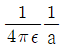
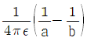
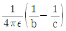
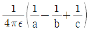
(정답률: 알수없음)

2. 정전용량이 C0(μF)인 평행판의 공기 커패시터가 있다. 두 극판 사이에 극판과 평행하게 절반을 비유전율이 εr인 유전체로 채우면 커패시터의 정전용량 (μF)은?
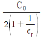
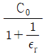
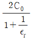
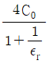
(정답률: 알수없음)
3. 유전율이 ε1과 ε2인 두 유전체가 경계를 이루어 평행하게 접하고 있는 경우 유전율이 ε1인 영역에 전하 Q가 존재할 때 이 전하와 ε2인 유전체 사이에 작용하는 힘에 대한 설명으로 옳은 것은?
- ε1 ＞ ε2인 경우 반발력이 작용한다.
- ε1 ＞ ε2인 경우 흡인력이 작용한다.
- ε1과 ε2에 상관없이 반발력이 작용한다.
- ε1과 ε2에 상관없이 흡인력이 작용한다.
(정답률: 알수없음)
4. 정전용량이 20μF인 공기의 평행판 커패시터에 0.1C의 전하량을 충전하였다. 두 평행판 사이에 비유전율이 10인 유전체를 채웠을 때 유전체 표면에 나타나는 분극 전하량(C)은?
- 0.009
- 0.01
- 0.09
- 0.1
(정답률: 알수없음)
5. 내구의 반지름이 a = 5cm, 외구의 반지름이 b = 10cm 이고, 공기로 채워진 동심구형 커패시터의 정전용량은 약 몇 pF 인가?
- 11.1
- 22.2
- 33.3
- 44.4
(정답률: 알수없음)
6. 강자성체의 B-H 곡선을 자세히 관찰하면 매끈한 곡선이 아니라 자속밀도가 어느 순간 급격히 계단적으로 증가 또는 감소하는 것을 알 수 있다. 이러한 현상을 무엇이라 하는가?
- 퀴리점(Curie point)
- 자왜현상(Magneto-striction)
- 바크하우젠 효과(Barkhausen effect)
- 자기여자 효과(Magnetic after effect)
(정답률: 알수없음)
7. 자성체의 종류에 대한 설명으로 옳은 것은? (단, χm는 자화율이고, μr는 비투자율이다.)
- χm ＞ 0 이면, 역자성체이다.
- χm ＜ 0 이면, 상자성체이다.
- μr ＞ 1 이면, 비자성체이다.
- μr ＜ 1 이면, 역자성체이다.
(정답률: 알수없음)
8. 반지름이 2m이고, 권수가 120회인 원형코일 중심에서의 자계의 세기를 30 AT/m로 하려면 원형코일에 몇 A의 전류를 흘려야 하는가?
- 1
- 2
- 3
- 4
(정답률: 알수없음)
9. εr = 81, μr = 1 인 매질의 고유 임피던스는 약 몇 Ω 인가? (단, εr은 비유전율이고, μr은 비투자율이다.)
- 13.9
- 21.9
- 33.9
- 41.9
(정답률: 알수없음)
10. 그림과 같이 평행한 무한장 직선의 두 도선에 I(A), 4I(A)인 전류가 각각 흐른다. 두 도선 사이 점 P에서의 자계의 세기가 0 이라면 a/b 는?
- 2
- 4
- 1/2
- 1/4
(정답률: 알수없음)
11. 내압 및 정전용량이 각각 1000V –2μF, 700V –3μF, 600V –4μF, 300V -8μF인 4개의 커패시터가 있다. 이 커패시터들을 직렬로 연결하여 양단에 전압을 인가한 후, 전압을 상승시키면 가장 먼저 절연이 파괴되는 커패시터는? (단, 커패시터의 재질이나 형태는 동일하다.)
- 1000V -2μF
- 700V -3μF
- 600V -4μF
- 300V –8μF
(정답률: 알수없음)
12. 진공 중에서 점(1, 3)m의 위치에 -2×10-9C의 점전하가 있을 때 점(2, 1)m에 있는 1C의 점전하에 작용하는 힘은 몇 N 인가? (단,
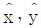
는 단위벡터이다.)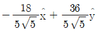
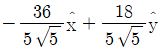
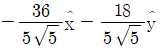
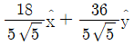
(정답률: 알수없음)
13. 진공 중에 무한 평면도체와 d(m)만큼 떨어진 곳에 선전하밀도 λ(C/m)의 무한 직선도체가 평행하게 놓여 있는 경우 직선 도체의 단위 길이당 받는 힘은 몇 N/m 인가?
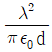
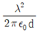
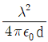
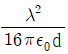
(정답률: 알수없음)
14. 그림은 커패시터의 유전체 내에 흐르는 변위전류를 보여준다. 커패시터의 전극 면적을 S(m2), 전극에 축적된 전하를 q(C), 전극의 표면전하 밀도를 σ(C/m2), 전극 사이의 전속밀도를 D(C/m2)라 하면 변위전류밀도 id(A/m2)는?
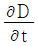
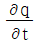
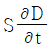
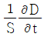
(정답률: 알수없음)
15. 단면적이 균일한 환상철심에 권수 100회인 A코일과 권수 400회인 B코일이 있을 때 A코일의 자기 인덕턴스가 4H라면 두 코일의 상호 인덕턴스는 몇 H 인가? (단, 누설자속은 0 이다)
- 4
- 8
- 12
- 16
(정답률: 알수없음)
16. 평행 극판 사이에 유전율이 각각 ε1, ε2 인 유전체를 그림과 같이 채우고, 극판 사이에 일정한 전압을 걸었을 때 두 유전체 사이에 작용하는 힘은? (단, ε1 ＞ ε2)
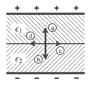
- ⓐ의 방향
- ⓑ의 방향
- ⓒ의 방향
- ⓓ의 방향
(정답률: 알수없음)
17. 평균 자로의 길이가 10cm, 평균 단면적이 2cm2인 환상 솔레노이드의 자기 인덕턴스를 5.4mH 정도로 하고자 한다. 이때 필요한 코일의 권선수는 약 몇 회인가? (단, 철심의 비투자율은 15000 이다)
- 6
- 12
- 24
- 29
(정답률: 알수없음)
18. 구좌표계에서 ∇2r 의 값은 얼마인가? (단,
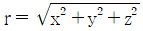
)- 1/r
- 2/r
- r
- 2r
(정답률: 알수없음)
19. 투자율이 μ(H/m), 단면적이 S(m2), 길이가 l(m)인 자성체에 권선을 N회 감아서 I(A)의 전류를 흘렸을 때 이 자성체의 단면적 S(m2)를 통과하는 자속(Wb)은?
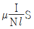
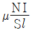
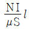
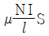
(정답률: 알수없음)
20. 자계의 세기를 나타내는 단위가 아닌 것은?
- A/m
- N/Wb
- (HㆍA)/m2
- Wb/(Hㆍm)
(정답률: 알수없음)
2과목: 회로이론
21. 그림과 같은 4단자 회로망의 4단자 정수에서 전송파라미터 C의 값으로 옳은 것은?
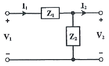
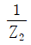
- 1
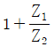
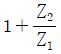
(정답률: 알수없음)
22. 펄스 변압기에서 상승시간(rase time)을 짧게 하기 위한 조건은?
- 누설 인덕턴스와 분포용량 모두 커야 한다.
- 누설 인덕턴스와 분포용량 모두 작아야 한다.
- 누설 인덕턴스는 크고 분포용량은 작아야 한다.
- 누설 인덕턴스는 작고 분포용량은 커야 한다.
(정답률: 알수없음)
23. RC 고역필터에 폭이 T인 단일 구형파를 입력했을 때 출력파는? (단, 시정수 τ ＜＜ T)
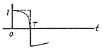
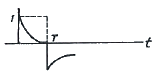
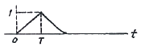
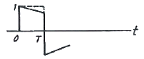
(정답률: 알수없음)
24.
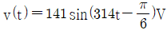
인 파형의 주파수는 약 몇 Hz 인가?- 50
- 60
- 141
- 314
(정답률: 알수없음)
25. 공급 전압이 100V이고, 회로에 전류가 10A가 흐른다고 할 때, 이 회로의 유효전력은 몇 W 인가? (단, 전압과 전류의 위상차는 30° 이다.)
- 500
- 1000
- 500√3
- 1000√3
(정답률: 알수없음)
26. 다음 회로에서 스위치(SW)를 충분한 시간동안 열어 놓았다가, 스위치(SW)를 닫고 2초 후에 회로에 흐르는 전류(I)는 약 몇 A 인가?
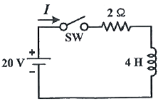
- 3.68
- 4.52
- 6.32
- 8.12
(정답률: 알수없음)
27. 다음 회로의 전달 함수(V2/V1)는?
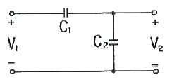
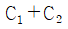
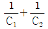
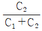
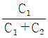
(정답률: 알수없음)
28. 다음 회로망에서 단자 a, b에서 바라본 테브난 등가저항은 몇 Ω 인가?
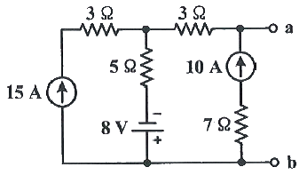
- 3
- 7
- 8
- 10
(정답률: 알수없음)
29. 이상적인 전압원의 내부 임피던스 Z는?
- 0Ω
- ∞
- 1Ω
- 50Ω
(정답률: 알수없음)
30. 다음 회로에서 하이브리드 파라메터 h11과 h22은?
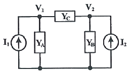
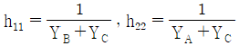
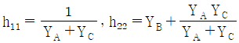
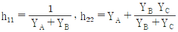
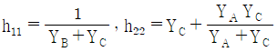
(정답률: 알수없음)
31. Norton의 정리에 대한 설명 중 ( ) 안의 내용으로 바르게 나열된 것은?
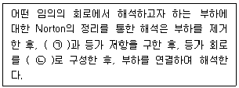
- ㉠ 등가 전압원, ㉡ 병렬
- ㉠ 등가 전류원, ㉡ 직렬
- ㉠ 등가 전압원, ㉡ 직렬
- ㉠ 등가 전류원, ㉡ 병렬
(정답률: 알수없음)
32. 그림과 같은 회로에서 최대 전력이 공급되기 위한 복소임피던스(ZL)는?
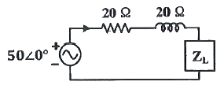
- 200 + j20
- 20 - j20
- 100 + j100
- 100 - j100
(정답률: 알수없음)
33. 다음 코사인 함수를 푸리에 급수 전개 시 스펙트럼에 대한 내용 중 옳은 것은?
- 진폭 스펙트럼은 구할 수 있으나 위상 스펙트럼은 구할 수 없다.
- 위상 스펙트럼은 구할 수 있으나 진폭 스펙트럼은 구할 수 없다.
- 진폭 스펙트럼과 위상 스펙트럼 모두 구할 수 없다.
- 진폭 스펙트럼과 위상 스펙트럼 모두 구할 수 있다.
(정답률: 알수없음)
34. 다음 변압기 결선 방법 중 제3고조파를 발생하는 것은?
- △-Y
- Y-△
- △-△
- Y-Y
(정답률: 알수없음)
35. RLC 직렬 공진회로에서 선택도 Q는? (단, ωr은 공진 각주파수이다.)
(정답률: 알수없음)
36. 다음과 같은 파형의 Laplace 변환은?
(정답률: 알수없음)
37. 부하 임피던스가 ZL = 30 + j40인 회로에서 부하에 실효 전류 Irms = 2A가 흐를 때, 역률은?
- 0.3
- 0.4
- 0.6
- 0.8
(정답률: 알수없음)
38. 다음 RC 저역 필터회로에서 ω = 1/RC 일 때, 위상은?
- 0°
- +45°
- -45°
- +90°
(정답률: 알수없음)
39. 다음 중 레지스턴스와 쌍대 관계가 되는 것은?
- 서셉턴스
- 컨덕턴스
- 어드미턴스
- 리액턴스
(정답률: 알수없음)
40. 의 f(t)는?
- 2e-2t sin t
- 2e-2t cos t
- 2e-t sin 2t
- 2e-t cos 2t
(정답률: 알수없음)
3과목: 전자회로
41. 다음 전달특성을 갖는 회로는? (단, 다이오드는 이상적인 소자이다.)
(정답률: 알수없음)
42. 다음 회로에 대한 설명 중 틀린 것은?
- 구형파를 주기적으로 발생시키는 회로이다.
- R과 C를 조절함으로써 발생하는 파형의 주파수를 조절할 수 있다.
- R1과 R2의 값을 조절함에 따라 출력 파형의 주파수를 조절할 수 있다.
- 연산증폭기의 (+)단자의 파형은 정현파이다.
(정답률: 알수없음)
43. 전달 컨덕턴스 증폭기(transconductance amplifier)의 이상적인 특성으로 옳은 것은? (단, Ri는 입력저항, RO는 출력저항이다.)
- Ri = 0, RO = 0
- Ri = 0, RO = 무한대
- Ri = 무한대, RO = 0
- Ri = 무한대, RO = 무한대
(정답률: 알수없음)
44. 다음 바이어스 회로가 증폭기로 동작한다면, RB는 몇 kΩ 인가? (단, VBE =0.7V, RC = 5kΩ, VCC = 10V, β = 100, IC = 1mA 이다.)
- 135
- 270
- 465
- 930
(정답률: 알수없음)
45. 다음 RC결합 소신호 증폭기에서 저주파수대역과 고주파수대역에서 전압이득이 감소하는 이유로 틀린 것은? (단, 중간주파수대역에서 C1, C2, C3 의 리액턴스를 무시할 수 있다.)
- 고주파수대역에서 C3에 의한 바이어스 효과가 크기 때문에 이득이 감소한다.
- BJT의 접합용량은 고주파수대역에서 이득감소의 원인이 된다.
- C1, C2는 저주파에서 그 양단의 전압 강하로 인해서 전압이득을 감소시킨다.
- RE는 저주파에서 부궤환을 일으켜서 이득을 감소시킨다.
(정답률: 알수없음)
46. 이상적인 발진회로의 발진조건으로 옳은 것은?
- 귀환 루프 이득이 1 보다 커야 한다.
- 귀환 루프 이득이 1 보다 적어야 한다.
- 귀환 루프 위상천이가 0° 이어야 한다.
- 귀환 루프 위상천이가 180° 이어야 한다.
(정답률: 알수없음)
47. 다음 회로의 입출력 특성곡선으로 적절한 것은? (단, R = 10Ω, 다이오드는 이상적인 소자이며, slope는 절댓값이다.)
(정답률: 알수없음)
48. 단접합 트랜지스터(Unijunction Transistor)를 이용한 다음 회로에서 X와 Y점에서 각각 나타나는 전압 파형은?
- X – 정현파, T – 톱니파
- X – 톱니파, T – 정현파
- X – 펄스파, T – 톱니파
- X – 톱니파, T – 펄스파
(정답률: 알수없음)
49. 어떤 차동증폭기의 차동이득은 1000이며, 동상이득은 0.1 일 때, 동상신호 제거비 CMRR은 몇 dB 인가?
- 60
- 80
- 1000
- 10000
(정답률: 알수없음)
50. 다음과 같은 궤환 증폭기의 전체 이득 Xo/Xi 는?
(정답률: 알수없음)
51. 미분기의 입력에 삼각파형이 공급되면 출력파형은? (단, 입력전원 및 구성소자의 값은 미분가능영역에 존재한다.)
- 반전된 삼각파
- 정현파
- 구형파
- 직류레벨
(정답률: 알수없음)
52. 전압변동률은 출력전압이 부하변동에 대해 얼마만큼 변화 되는가를 나타내는 것인데 무부하시와 부하 시의 전압 변동률을 △V, 무부하시 출력 전압을 Vo, 부하 시 출력전압을 VL이라 할 때 전압 변동률 △V는?
(정답률: 알수없음)
53. 어느 방송국의 송신출력이 15kW, 변조도 1, 안테나의 저항이 50Ω일 때 반송파의 크기는 얼마인가?
- 1 kV
- 9 kV
- 15 kV
- 17 kV
(정답률: 알수없음)
54. 다음 중 BJT의 동작점 Q의 변동에 영향이 적은 것은?
- 온도변화에 의한 ICO 변화
- 온도변화에 의한 VBE 변화
- BJT의 품질 불균일에 의한 β값 변화
- 회로내의 커패시터값 변화
(정답률: 알수없음)
55. 고역 차단주파수가 1000kHz 인 증폭회로를 2단으로 종속 연결했을 때 종합 고역 차단주파수는 약 몇 kHz 인가?
- 640
- 820
- 1000
- 2000
(정답률: 알수없음)
56. 다음 FET 증폭회로의 소신호 전압이득은? (단, 채널변조효과는 고려하지 않으며 gm = 8mS, RD = 5kΩ 이다.)
- -10
- -20
- -40
- -50
(정답률: 알수없음)
57. 다음 수정 발진회로의 특징 중 틀린 것은?
- 발진 주파수는 수정 진동자의 공진 주파수(고유 주파수)로 결정된다.
- 발진 주파수가 안정적인 이유는 발진 조건을 만족하는 유동성 주파수의 범위가 매우 좁기 때문이다.
- 수정 진동자의 Q는 매우 좁다.
- 주위 온도의 영향이 적다.
(정답률: 알수없음)
58. A급 증폭기에 대한 설명 중 옳은 것은?
- 출력 전력이 매우 크다.
- 컬렉터 전류는 입력 신호의 전주기 동안 흐른다.
- 동작점은 전달특성 곡선의 차단점 이하에 되게 바이어스를 가해 동작시킨다.
- 일그러짐이 매우 크다.
(정답률: 알수없음)
59. 다음 중 입력 신호의 (+), (-)의 피크를 어느 기준 레벨로 바꾸어 고정시키는 회로는?
- 클램퍼
- 클리퍼
- 리미터
- 필터
(정답률: 알수없음)
60. 다음 연산증폭기를 이용한 회로에서 전류 IL은 몇 mA 인가? (단, V1 = 3V, V2 = 7V, RL = 15kΩ, R1 = R2 = R3 = R4 = 10kΩ이다.)
- 0.1
- 0.2
- 0.4
- 0.8
(정답률: 알수없음)
4과목: 물리전자공학
61. SCR 소자에 대한 설명 중 틀린 것은?
- 게이트에 인가된 작은 전류로 Turn-on 할 수 있다.
- pnpn 구조의 3단자 소자이다.
- 게이트의 극히 작은 전력에 의하여 Turn-on 될 수 있다.
- Turn-on 이후 게이트 전압을 차단하여 Turn-off 할 수 있다.
(정답률: 알수없음)
62. 홀(hall) 효과와 가장 관계가 깊은 것은?
- 자장계
- 고저항 측정기
- 전류계
- 분압계
(정답률: 알수없음)
63. 수은등에 들어있는 수은증기의 전리전압은 10.44V 이다. 전자를 충돌시켜서 이것을 전리시키는데 필요한 최소의 전자 속도는? (단, 전자의 질량 m = 9.109×10-31 [kg], 전기량 e = 1.602×10-19 [C])
- 1.92×106[cm/s]
- 3.84×106[cm/s]
- 1.92×106[m/s]
- 3.84×106[m/s]
(정답률: 알수없음)
64. 서미스터(thermistor) 용도로 틀린 것은?
- 트랜지스터 회로의 온도 보상
- FM 전력계
- 온도 검출
- 발진기
(정답률: 알수없음)
65. 3cm 떨어진 두 평면 전극으로 구성된 2극관에 3kV의 전압을 걸었을 때, 강전계로 인해 음극의 일함수가 낮아질 경우, 감소된 일함수의 양은? (단, 전자의 전하량 e = 1.602×10-19[C], 진공에서의 유전율 ε0 = 8.854×10-12[F/m])
- 0.12 eV
- 0.012 eV
- 0.24 eV
- 0.024 eV
(정답률: 알수없음)
66. 세기가 일정하고 균일한 자장내에 속도가 동일한 양성자, α입자 및 전자가 자력선에 수직한 면으로 입사하였을 때, 각 입자들은 등속 원운동을 한다. 이 때 각 입자들의 궤도 반경의 비는 어떠한가? (단, 전자의 질량은 양성자 질량의 1/1840 이고, rp : 양성자의 궤도반경, rα : α입자의 궤도반경, re : 전자의 궤도반경이다.)
- rp : rα : re = 1 : 2 :

- rp : rα : re = 1 : 4 :
- rp : rα : re =
 : 1 : 2
: 1 : 2 - rp : rα : re =
 : 4 : 1
: 4 : 1
(정답률: 알수없음)
67. 건(Gunn) 다이오드에서 부성저항이 생기는 원인은?
- 캐리어농도의 전압의존성
- 캐리어농도의 온도의존성
- 유효질량의 온도의존성
- 유효질량의 전압의존성
(정답률: 알수없음)
68. 다음 중 에너지밴드에 속하지 않는 것은?
- 전도대
- 금지대
- 가전자대
- 전기대
(정답률: 알수없음)
69. 다음 중 N형 반도체에서 농도의 관계식으로 옳은 것은? (단, n : 전자의 농도, p : 정공의 농도)
- n = p
- np = 0
- n ＜ p
- n ＞ p
(정답률: 알수없음)
70. 다음 중 PN 접합에 관한 설명 중 옳은 것은?
- 공간전하 영역은 역방향 바이어스가 커지면 증가한다.
- 공간전하 영역은 불순물 농도에 비례 하여 커진다.
- 접합용량은 역방향 바이어스가 증가하면 커진다.
- 접합용량은 불순물 농도가 증가하면 감소한다.
(정답률: 알수없음)
71. 접합형 트랜지스터의 구조에 대한 설명으로 옳은 것은?
- 이미터, 베이스, 컬렉터의 폭은 같게 한다.
- 불순물의 농도는 컬렉터를 가장 크게, 이미터를 가장 작게 한다.
- 베이스 폭은 이미터와 컬렉터의 폭과 비교할 때 비교적 좁게 한다.
- 베이스 폭은 비교적 넓게 하고, 불순물은 많이 넣는다.
(정답률: 알수없음)
72. 터널 다이오드(tunnel diode)의 설명 중 틀린 것은?
- 부성 저항 특성을 나타낸다.
- 마이크로파 발진용으로 사용된다.
- 공간 전하층이 일반 다이오드 보다 넓다.
- 역바이어스 상태에서 전도성이 양호하다.
(정답률: 알수없음)
73. 페르미-디랙(Fermi-Dirac) 분포함수에 대한 설명으로 틀린 것은? (단, Ef : 페르미준위, f(E) : 페르미함수, k : 볼쯔만 상수, T : 절대온도 이다.)
- 절대온도 0 K 에서는 E ＞ Ef 이면 f(E) = 0 이 된다.
- 온도에 따라 변화한다.
- 수식표현은 로 나타낸다.
- Pauli의 배타율을 따른다.
(정답률: 알수없음)
74. 페르미-디랙 분포(Fermi-Dirac distribution)에서 T = 0 K 일 때 분포 함수의 성질로 옳은 것은? (단, Ef : 페르미준위, f(E) = 페르미함수)
- f(E) = 1, E ＜ Ef
- f(E) = 1/2, E ＞ Ef
- f(E) = 1/2, E ＜ Ef
- f(E) = 1, E ＞ Ef
(정답률: 알수없음)
75. 반도체의 성질에 대한 설명으로 틀린 것은?
- 반도체는 역기전력이 크며 부 온도계수를 갖는다.
- PN 접합 부근에서는 n에서 p로 전계가 생긴다.
- 직접 재결합률은 정공밀도와 전자밀도의 곱에 비례한다.
- p형 반도체의 억셉터 원자는 정상 동작온도에서 부전하가 된다.
(정답률: 알수없음)
76. 광전면에서 방출된 전자의 운동에너지는? (단, h는 plank의 상수이고, eø는 광전면의 일함수이다.)
(정답률: 알수없음)
77. 공기 중에서 거리가 r 만큼 떨어진 두 점전하 q1, q2 사이에 작용하는 전기적인 인력은? (단, ε0은 진공의 유전율이다.)
(정답률: 알수없음)
78. 재결합 중심(recombination center)의 원인이 되는 설명으로 틀린 것은?
- 결정표면의 불균일
- 순도가 높은 결정
- 결정격자의 결함
- 불순물에 의한 격자 결함
(정답률: 알수없음)
79. 발광 다이오드(LED)에 대한 설명 중 틀린 것은?
- GaP, GaAsP 등 화합물 반도체로 만들어진다.
- PN 접합이 순바이어스 되었을 때 전자와 정공의 재결합 과정에서 빛이 발생된다.
- 일반적으로 간접형 반도체로 제작된다.
- LED에 흐르는 전류에 따라 상대 광도가 선형적으로 변하는 특성을 갖는다.
(정답률: 알수없음)
80. 파울리(pauli)의 배타 원리에 관한 설명으로 옳은 것은?
- 전자는 낮은 준위의 양자상태에서 높은 준위의 양자 상태로 되려는 성질이 있다.
- 동일한 양자 상태에 다수의 전자가 있기를 원한다.
- 어느 한 원자 내에서 2개의 전자가 같은 양자 상태에 존재할 수 없다.
- 전자의 스핀(spin)은 평형을 이루도록 상호작용을 한다.
(정답률: 알수없음)
5과목: 전자계산기일반
81. 다음 마이크로 명령어로 구성되는 명령어는?
- ADD(더하기)
- LOAD(인출)
- JMP(분기)
- STA(저장)
(정답률: 알수없음)
82. 다음 중 순서도(flowchart) 종류에 해당되지 않는 것은?
- 시스템 순서도(system flowchart)
- 실체 순서도(entity flowchart)
- 상세 순서도(detail flowchart)
- 개략 순서도(general flowchart)
(정답률: 알수없음)
83. 16개의 플립플롭으로 된 시프트 레지스터에 15(10)가 기억되어 있을 때, 3 비트만큼 왼쪽으로 시프트한 결과는?
- 10(10)
- 30(10)
- 60(10)
- 120(10)
(정답률: 알수없음)
84. C언어에서 변수 앞에 * 기호를 사용하는 데이터형은?
- array
- pointer
- long
- float
(정답률: 알수없음)
85. 스택 메모리를 이용하여 수식 E = (A + B – C)× D 연산을 하려고 할 때, 연산 명령어 순서로 옳은 것은?
- SUB → MUL → ADD
- ADD → MUL → SUB
- MUL → ADD → SUB
- ADD → SUB → MUL
(정답률: 알수없음)
86. 2의 보수를 이용하는 8비트 시스템에서 (-15) -3의 연산 결과는?
- 11101101
- 10010010
- 11101110
- 10010001
(정답률: 알수없음)
87. 1024×16 비트의 주기억장치를 가진 컴퓨터에서 MAR(Memory Address Reigster)과 MBR(Memory Buffer Reigster)의 비트 수는?
- MAR = 6 bits, MBR = 10 bits
- MAR = 10 bits, MBR = 6 bits
- MAR = 10 bits, MBR = 16 bits
- MAR = 18 bits, MBR = 10 bits
(정답률: 알수없음)
88. 논리회로를 설계하는 과정에서 최적화를 위한 고려 대상이 아닌 것은?
- 전파 지연시간의 최소화
- 사용 게이트 수의 최소화
- 게이트 종류의 다양화
- 게이트 간 상호변수의 최소화
(정답률: 알수없음)
89. C 언어에 대한 설명 중 틀린 것은?
- C 언어의 기원은 ALGOL에서 찾을 수 있다.
- 뛰어난 이식성을 가지고 있다.
- 분할 컴파일이 가능하다.
- 비트 연산을 지원하지 않는다.
(정답률: 알수없음)
90. 불대수 (A+B)(A+C)를 간략화 하면?
- ABC
- A+B+C
- AB+C
- A+BC
(정답률: 알수없음)
91. 다음 설명의 입·출력 방식은?
- 직접 제어 방식
- DMA(Direct Memory Access) 방식
- 프로그램에 의한 I/O 방식
- 인터럽트에 의한 I/O 방식
(정답률: 알수없음)
92. 16×1 멀티플렉서에서 필요한 선택신호는 몇 개인가?
- 1
- 4
- 8
- 16
(정답률: 알수없음)
93. 부동소수점 표현 방식의 설명 중 틀린 것은?
- 고정소수점 표현보다 표현할 수 있는 범위가 넓다.
- 매우 큰 수를 표시하기에 편리하다.
- 수의 표현은 지수부분, 가수부분만으로 구분 표현한다.
- 32비트 길이의 단일정밀도의 지수부는 일반적으로 7개의 비트를 사용한다.
(정답률: 알수없음)
94. 다음 JK 플립플롭의 특성표에서 (a)와 (b)는?
- (a) = 0, (b) = 0
- (a) = 0, (b) = 1
- (a) = 1, (b) = 0
- (a) = 1, (b) = 1
(정답률: 알수없음)
95. 다음 소프트웨어의 분류 중 성격이 다른 하나는?
- 미들웨어
- 프리웨어
- 쉐어웨어
- 라이트웨어
(정답률: 알수없음)
96. 7-bit 해밍 코드에서 오류를 수정할 때 Parity bit 의 위치는?
- 1, 2, 3번째 비트에 위치한다.
- 1, 2, 4번째 비트에 위치한다.
- 1, 3, 7번째 비트에 위치한다.
- 1, 5, 7번째 비트에 위치한다.
(정답률: 알수없음)
97. 다음과 같은 명령어 형식을 만들기 위해 요구되는 명령의 최소 비트(bit)는?
- 12
- 15
- 17
- 19
(정답률: 알수없음)
98. 사용자가 프로그래밍 할 수 없는 ROM은?
- Mask ROM
- UVEPRROM
- EPROM
- EEPROM
(정답률: 알수없음)
99. 다음 karnaugh맵을 간략화 하면?
- A
- A + B
(정답률: 알수없음)
100. 다음 중 마스크 연산을 하기 위해 사용하는 게이트는?
- OR
- AND
- EX-OR
- NOT
(정답률: 알수없음)